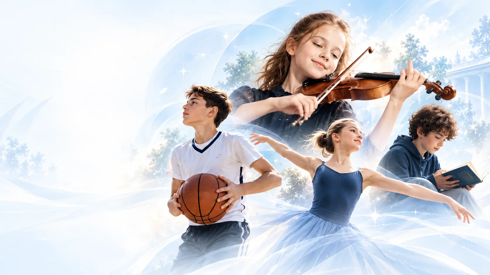
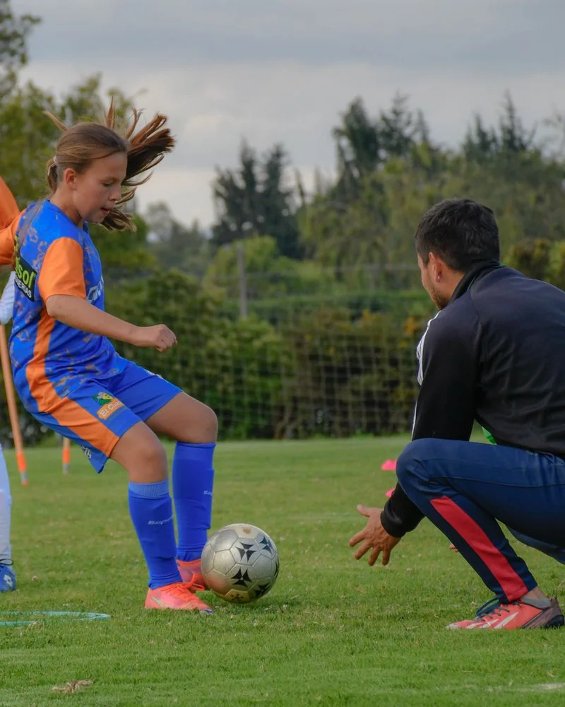
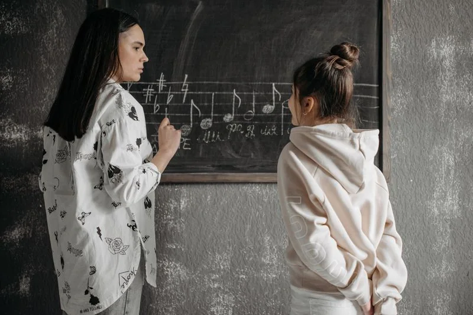
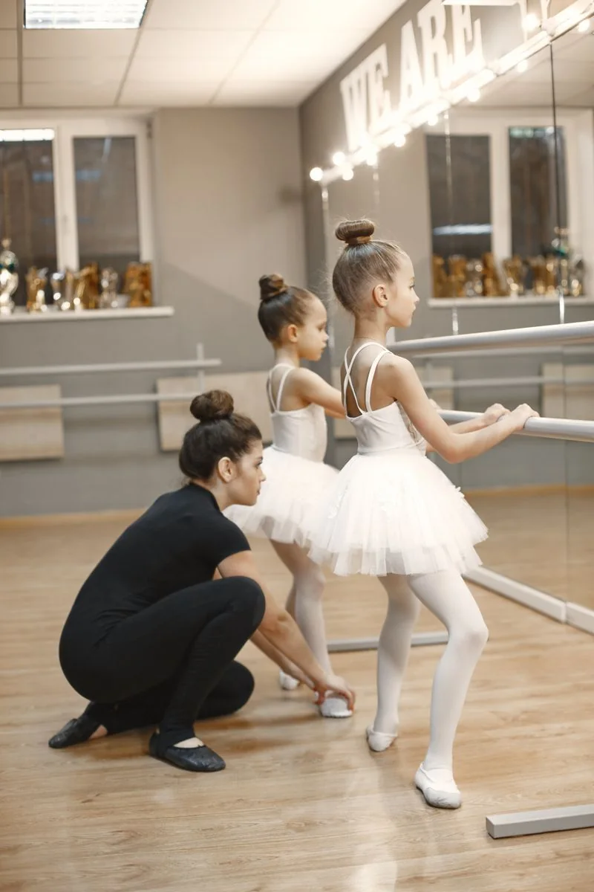
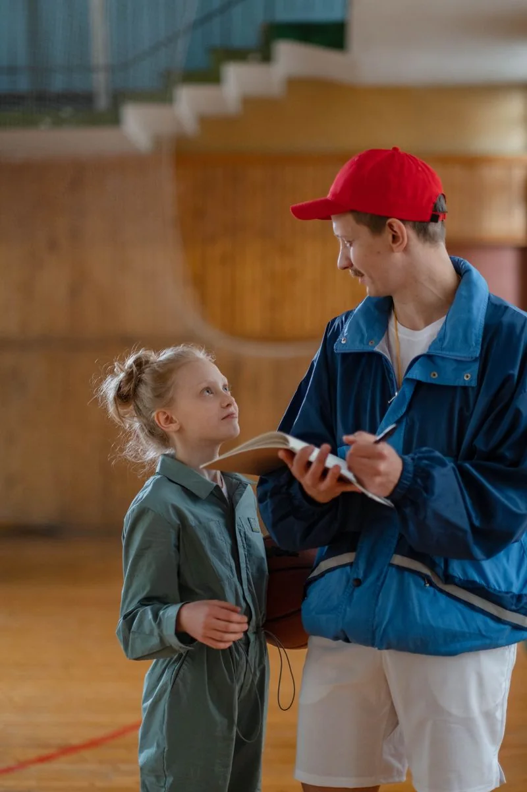
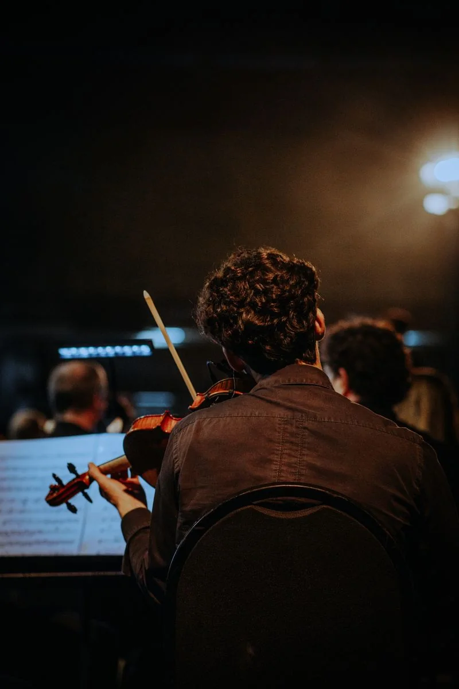

Öğrencinin yaşı, ilgi alanları, eğitim geçmişi ve seçmek istediği sanat veya spor alanı belirlenir.
DEĞERLENDİRME
Nova Yetenek Taraması Sistemi

Yetenek Gelişim Sürecimiz
Aşamaları inceleyerek yetenek gelişim yolculuğumuzu keşfedin.
Koordinasyon, denge, ritim, dikkat, hareket kabiliyeti, öğrenme hızı ve temel motor beceriler değerlendirilir.


Öğrenci seçtiği alana göre özel değerlendirmeye alınır. Sanat ve spor alanlarında ilgili beceriler ölçülür.
Öğrencinin verilen yönlendirmeyi ne kadar hızlı uyguladığı, yeni beceriyi öğrenme kapasitesi ve gelişime açıklığı gözlemlenir.


Sonuçlar; ölçme-değerlendirme uzmanları, akademisyenler, sanatçılar, sporcular, antrenörler ve branş uzmanlarından oluşan seçici kurul tarafından birlikte değerlendirilir.
Öğrencinin yetenek profili oluşturulur; uygun bulunan öğrenciler Nova’nın sınırlı kontenjanlı uzun vadeli gelişim programına kabul edilir.

TARAMA ALANLARIMIZ
TEMEL YAKLAŞIMIMIZ
Nova’da amaç en hazır çocuğu değil, doğru yönlendirmeyle en güçlü gelişimi gösterebilecek potansiyeli keşfetmektir.